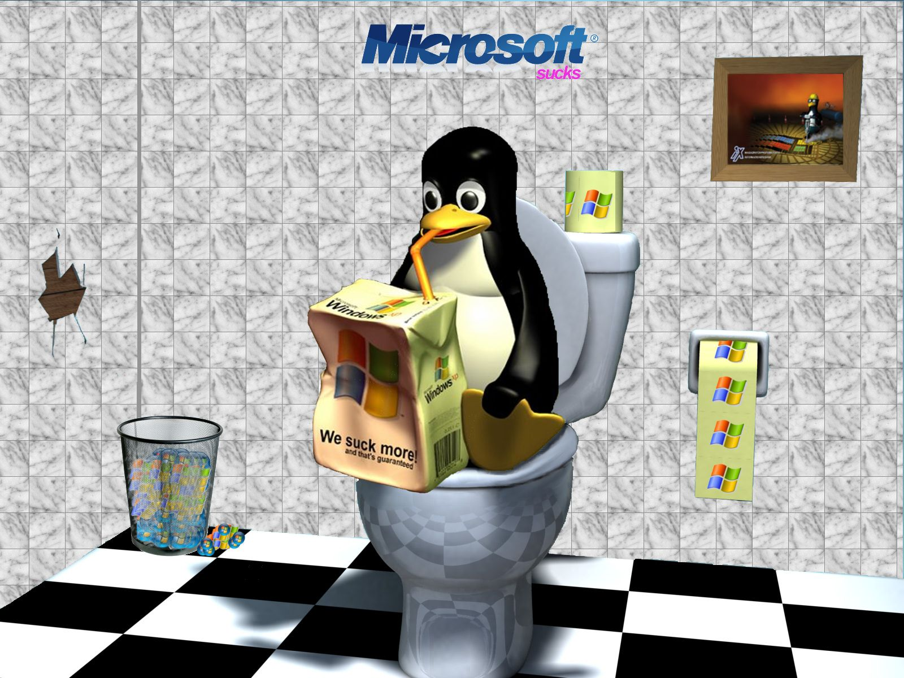

未定は”未定”
原始、開発環境はwindowsだった
- Anacondaがよく飛ぶ
- 突然出るブルースクリーン…
- →再インスコバトルスタート
- そもそも機械学習するには非力なマシン
- 2C4T, 8GBのラップトップ

windows updateしたらOSが
破壊された！
- うぉおおおおおい！

いっそのこと窓を叩き割ろう!
- windowsを消し去ってUbuntuに完全に移行した
- Ubuntu Budgieを使い始めた
- デスクトップに美しさを求め始める
|  |  |
unixpornという沼
- GNOMEやKDEに負けないエチエチな環境を作りたい！
- キーボードから手を離さないという喜び
- タイリングWMやVIM、CLIに自然とふれていく

不満をあったら即解決しよう！
- 不満→勧められて→とりあえずインスコ・実装のサイクル
- Linuxは大体問題が分かるから解決できる→楽しい
journalctlや各種Log
- 解決できたら一つTuxと仲良しになれる！
- 自然と必要な知識が得られていく…はず…
 |
 |
試験当日行ってビックリ (Part 1)
多分住めない…
- 県庁所在地でこれか…不安が募る
- 関西の主要都市は全国的に見てデカいということを失念
- 大学のあるところ
- 駅前に何もない
- 歩いても何もない (スーパーどこ…)
- 試験の出来も良くなかった

試験当日行ってビックリ (Part 2)
ドナドナ…
- 深夜、雨模様の駅前、シャッター街…
- 前日の試験の出来も引きづっていた
- 神社で賽銭のために銭を投げたら外した
- しかも2つ目の社で…
- 試験の出来…
- 面接で受け入れ先の教員の前で「分かりません」を連呼した

合格発表日までの地獄の日々
院浪or就活の選択が目前に迫っていた- 後期日程で受けられるところには手辺り次第コンタクトを取った
- 合格発表日までの2週間は本当に鬱だった
- 家族共々、まるで深海の中で生活しているかのような圧迫感